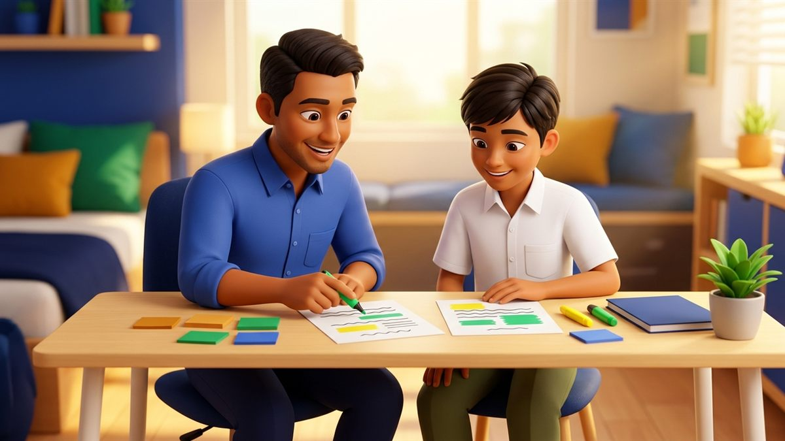
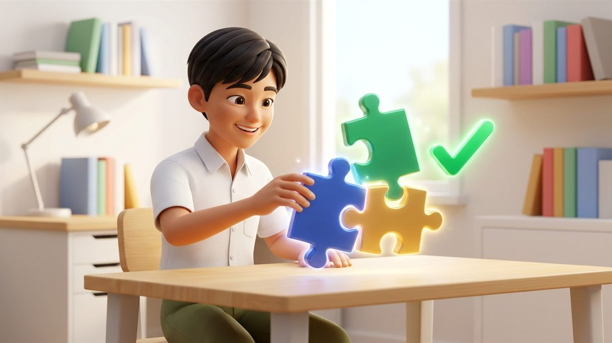

Teknik Rumusan Bahasa Melayu SPM KSSM: Cara Raih 28/30 Markah

Assalamualaikum dan salam sejahtera anak-anak calon SPM. Dalam Kertas 2 Bahasa Melayu (1103/2), soalan Rumusan ialah lubuk markah paling selamat kerana semua isi sudah ada di hadapan mata dalam Bahan 1 dan Bahan 2. Mari Cikgu tunjukkan peta markah dan contoh kertas sebenar supaya markah kamu tidak bocor.
1. Faham Pecahan 30 Markah Skema Pemeriksa LPM
Sebelum mula menulis, anak-anak mesti nampak dengan jelas ke mana perginya 30 markah soalan Rumusan. Lihat bar pecahan markah di bawah supaya masa di dalam dewan diagihkan dengan tepat.
1 ayat menyebut semua fokus bahan.
8 isi lengkap x 2 markah setiap isi.
1 ayat tema, cadangan dan harapan.
Ayat gramatis, penanda wacana dan ejaan.
Cukup 1 ayat yang menyebut Fokus 1 dan Fokus 2 tanpa huraian meleret.
2 MarkahAgih isi daripada Bahan 1 dan Bahan 2 supaya semua fokus terjawab.
16 MarkahJangan salin ayat akhir petikan; bina ayat cadangan dan kesan baharu.
2 MarkahTulis dalam bentuk perenggan berangkai guna penanda wacana, bukan senarai titik.
10 Markah2. Formula Pendahuluan & Kesimpulan Yang Mengunci 4 Markah Awal
Bayangkan pendahuluan dan penutup sebagai tiga kepingan puzzle yang mesti bercantum kemas: Fokus Bahan, Cadangan Tindakan, dan Harapan. Perhatikan perbezaan jawapan bocor markah dengan jawapan skema KSSM di bawah.

Petikan ini menerangkan tentang kebaikan bersukan kepada murid sekolah di negara kita. Kesimpulannya, semua orang perlulah bersukan selalu.
Rumusan membincangkan faedah bersukan kepada murid dan kekangan untuk melaksanakannya. Kesimpulannya, semua pihak hendaklah menggalakkan budaya sukan agar generasi sihat dan berdisiplin dapat dilahirkan.
Uji Faham 10 Saat: Bolehkah kita tulis contoh panjang di dalam perenggan Pendahuluan?
3. Aliran Kerja 4 Langkah & Contoh Kertas Jawapan Beranotasi
Ramai calon keciciran markah kerana mengambil hampir semua isi daripada Bahan 1 dan terlupa grafik atau puisi dalam Bahan 2. Ikut aliran 4 langkah dan semak contoh kertas beranotasi di bawah.
Garis semua fokus dalam Bahan 1 dan Bahan 2.
Ambil 8 isi seimbang daripada kedua-dua bahan.
Sambung isi guna penanda wacana yang kemas.
Buang contoh panjang jika hampir 118 patah kata.
Pendahuluan • 2mRumusan membincangkan faedah bersukan kepada murid dan kekangan untuk melaksanakannya.
Isi 2 Bahan • 16mAntara faedah bersukan termasuklah meningkatkan kecergasan fizikal serta memupuk semangat kerjasama berpasukan. Selain itu, aktiviti sukan dapat mengurangkan tekanan belajar di samping mencungkil bakat terpendam murid. Namun begitu, kekangan pelaksanaannya ialah kekangan masa akibat jadual belajar yang padat serta kekurangan kemudahan sukan di sekolah. Tambahan pula, pengaruh gajet membataskan pergerakan murid dan kurangnya galakan daripada ibu bapa turut menjadi punca.
Penutup • 2mKesimpulannya, semua pihak perlulah menyokong budaya bersukan agar generasi sihat dan seimbang dapat dilahirkan.
Kuala Lumpur dan gotong-royong masing-masing dikira sebagai 1 perkataan sahaja.
Kiraan LPMUngkapan seperti di sekolah atau ke padang dikira sebagai 1 perkataan dalam rumusan.
Kiraan LPMFrasa seperti Selain itu dan Oleh itu juga dikira 1 perkataan mengikut skema.
Kiraan LPMTarikh seperti 31 Ogos 2026 atau angka dua ribu dua puluh enam dikira 1 perkataan.
Kiraan LPM4. Senarai Semak Pantas Sebelum Hantar Kertas Rumusan
Gunakan senarai semak interaktif di bawah setiap kali anak-anak membuat latihan Rumusan daripada set Trial Bahasa Melayu di eTutor.my.